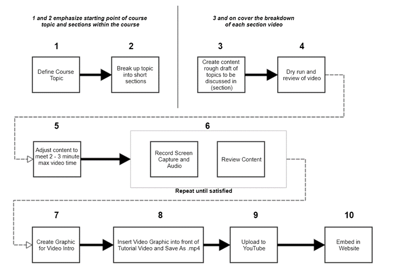

BACK
Task 3 Video
You can view more videos by clicking on of the available micro-courses on the homepage.EduDevTeam.com
Download: Task 3 Assignment - PDF
Video Editing Process
To produce the videos, I first drafted the a generalize document breaking up the topic of Git version control into smaller sections that were short enough to keep the attention of an average viewer. Next, a draft of content is written up as a guide for myself when I am creating the recorded video screen capture.
- Once the draft is to a point that is clear and concise the next step for the production of the micro course is to spin up a virtual environment using Virtual Box. Virtual box is tool that allows a user to create virtual operating system in a window use it like you would any other operating system. For the downloading and installation videos I created fresh copies of Windows, Mac, and Linux to guide beginners in the videos.
- After the Virtual Environment is running, I then open my video screen capture software Snagit by Techsmith. Using Snagit an exact capture of the virtual operating system is framed within the Virtual Box software only showing the operating system.
- It’s time to begin recording. I click the on the record button to capture the tutorial. Once done, I click the stop button. The video loads into the Snagit preview editor allowing me to review any issues and allows me to make minor edits. The video is then saved.
- Next, an intro graphic is created using the Affinity Designer by Serif. The graphic color and layout are defined for the entire micro-course giving each video a simple relationship to that micro-course. The graphic is then exported to a PNG.
- Now the video and graphic are opened with the Shot Cut video editing software. The image is placed in front and at the end of the video. The video is then re-exported to a compressed MPG format.
- Next the video is uploaded to YouTube and placed within its micro-course group.
- After uploading is complete, it is linked in the EduDevTeam.com website course page.
Version Control Software
- Snagit was used to record the screen capture
- Power Point was used to define the videos with slides
- VirtualBox was used to create fresh virtual copies of Windows, Mac, and Linux so I could effectively guide the learner as if I was on a machine that had never installed any development tools.
- YouTube is where the videos are hosted
- Affinity Design to create the video intro screens
- Shot Cut Video Editing software to add in intro screens at the start and end of each video.
- Videos are then loaded back into the EduDevTeam.com website using JavaScript.
Conceptual Framework
Process of Development
Benefits of the design and structure
The flowchart above effectively describes the process of producing a video for the micro-course. The key points to focus on are stages 1 and 2 which cover importance of breaking up the tutorial into smaller sections. This a key factor used to keep the learner’s attention and allow them to pace themselves. This thought is further supported in stages 5 and 6. Stage 5 emphasizes the max time limit. Two minutes is ideal, but three minutes is still acceptable. There will be times when the max time limit cannot be matched, and this will be pointed out within the instruction. Stage 6 is the content review. In this stage I may either clip out sections of content or I may re-record the entire video multiple times until it meets my standards of understanding.
To effectively tie all the sections within a micro-course together an intro cover template is created. Once designed, each video will retain the colors and look of the template. The only change will be the text. After the cover is exported as an image, the tutorial and cover image are imported in the Shot Cut video editing software. The cover placed in front of the tutorial video on the video timeline and exported as a .mp4 file ready for YouTube.
The video is then uploaded to my YouTube channel and placed within a playlist to match the micro-course title.
Finally, the video is referenced within website and made available on the websites micro-course page dynamically.